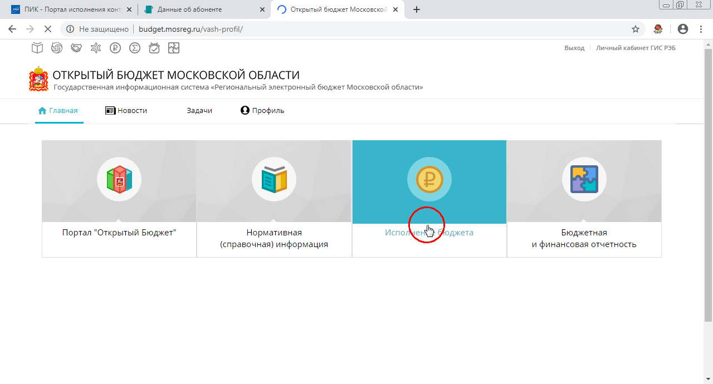
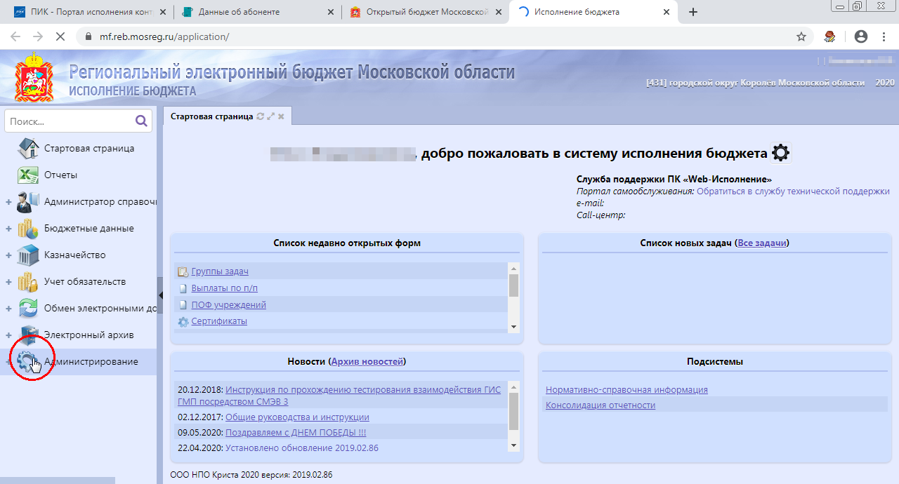
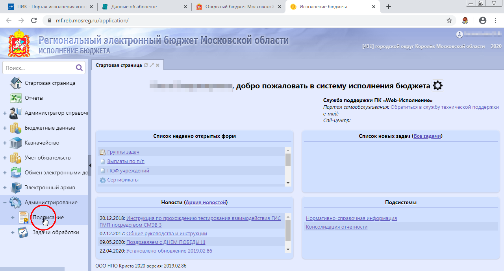
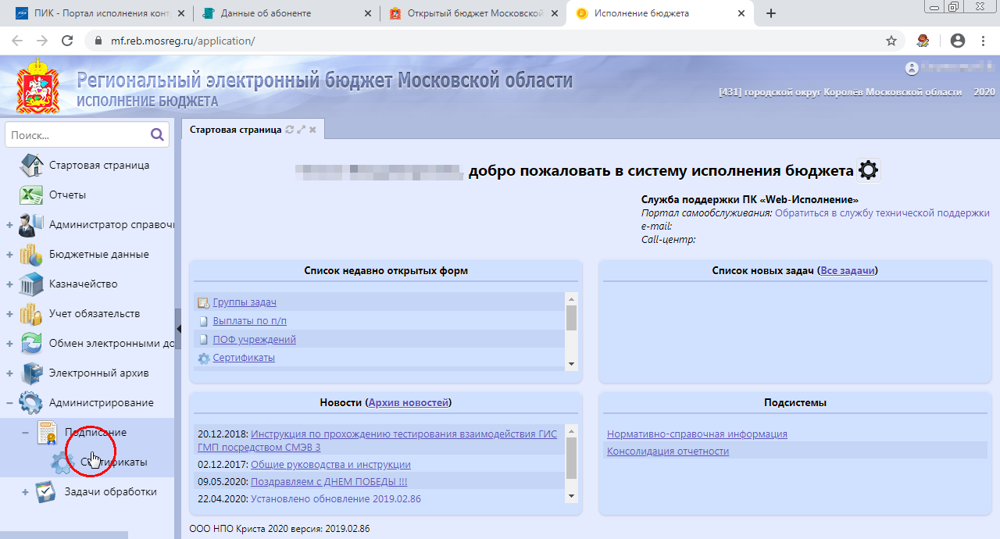
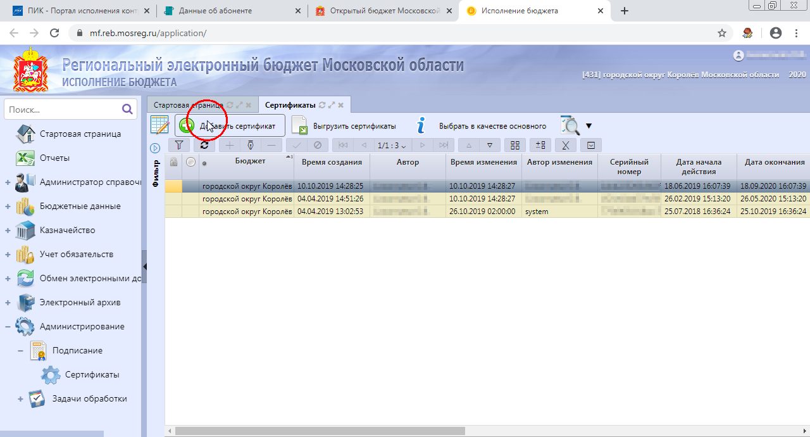
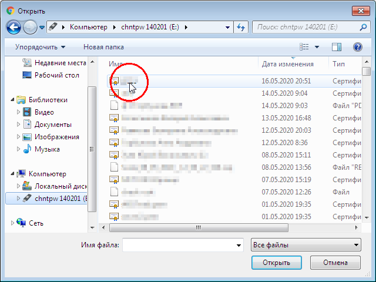
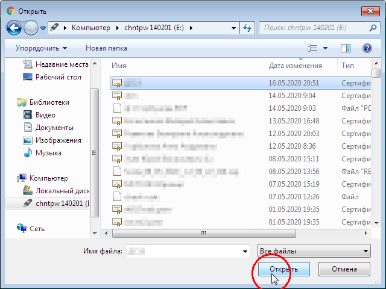
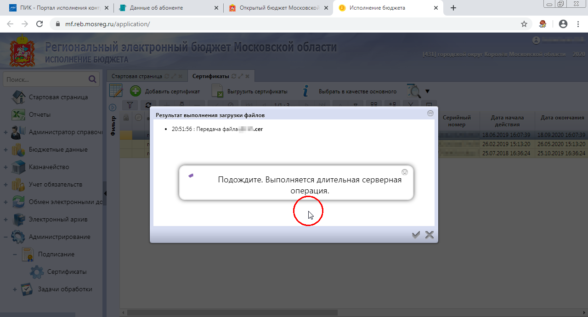
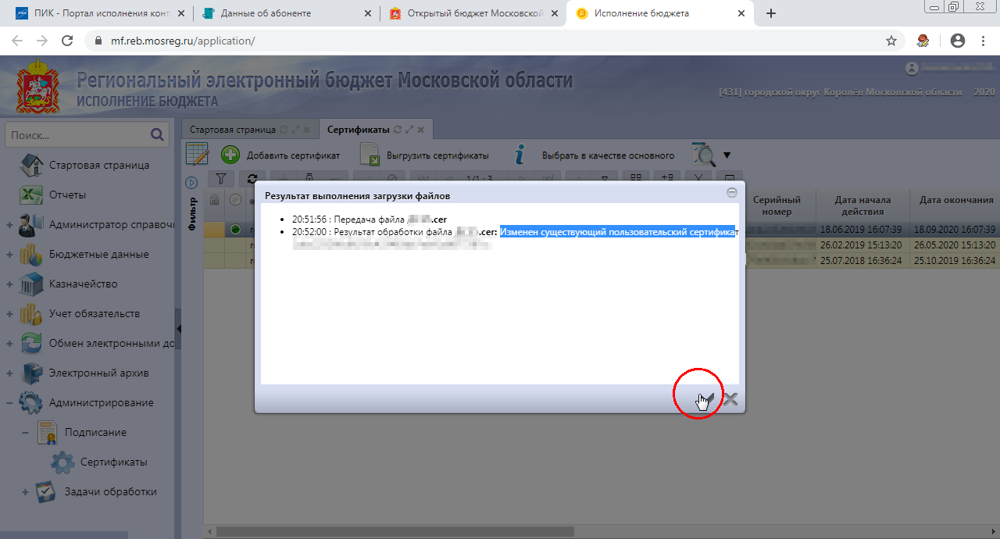
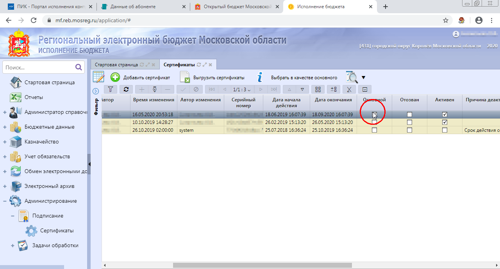

Добавление сертификата в НПО Криста
Какой сертификат выбрать?
Для работы с Кристой подходят как ключи юридических лиц, так и физических лиц.
Если Вы руководитель организации наверняка у Вас есть оба варианта. Я рекомендую использовать ключ юридического лица (опознать можно по наличию ОГРН и должности руководителя в составе сертификата) - в этом случае Вы сможете сделать все самостоятельно.
Если же Вы сотрудник организации, либо у Вас под рукой только ключи физ. лиц - после описанных ниже процедур Вам понадобится обратиться к администратору системы (обычно тот, кто выдал вам Единый логин) для подтверждения загруженного сертификата.
Предварительные настройки
Перед тем как загружать сертификат нужно установить его в хранилище Личные компьютера. Тут можно прочитать как это сделать.
Так же желательно установить все корневые сертификаты.
Загрузка сертификата
Зайдите в личный кабинет с помощью Единого логина и перейдите в подситему Исполнение бюджета 
В меню слева выберите Администрирование - Подписание - Сертификаты



Нажмите Добавить сертификат и выберите файл сертификата в открывшемся окне



Дождитесь обработки и нажмите кнопку-галочку


Убедитесь что загруженный сертификат выбран как основной 
Готово!